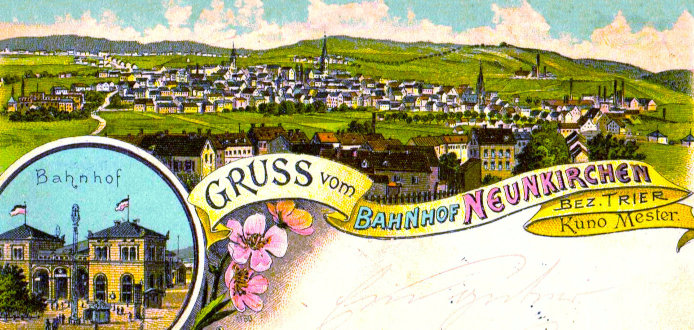
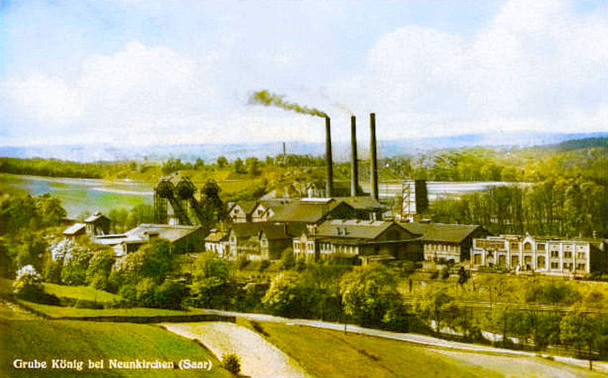
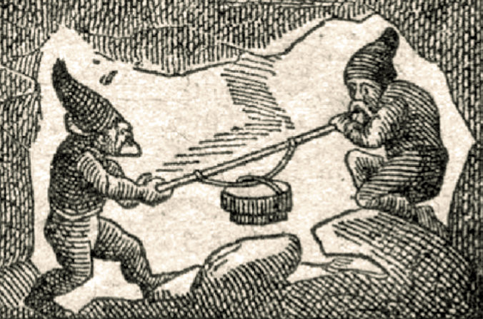
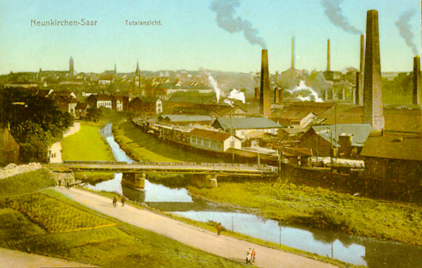
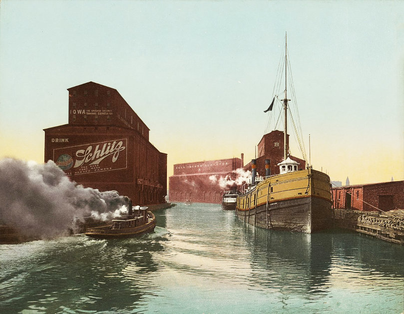
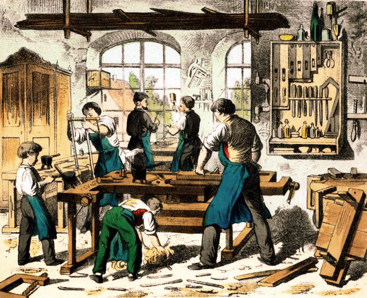
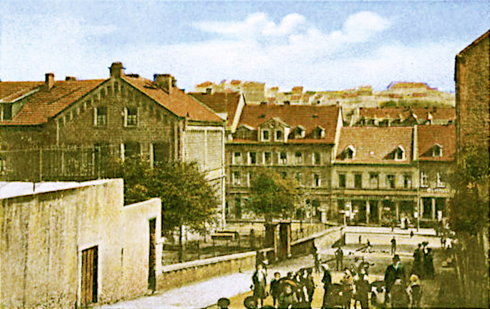

Gruss vom Bahnhof Neunkirchen

Grube König Neunkirchen
Die Familie Schlessmann Teil 4
Wenn die Unmassen von Rauch aus den Fabrikschornsteinen und Öfen nicht wären, könnte man den Ort idyllisch nennen.
- Richard Dehmel über Neunkirchen, 1883
Die Ära Karl Schlessmann
Unser Vorfahre Friedrich Karl Schlessmann, der sich Karl nannte, war ab 1838 der einzige Mensch mit dem Namen Schlessmann in Neunkirchen. Er war Schmied geworden, arbeitete nebenbei als Hüttenarbeiter und hatte seine eigenen Äcker und wahrscheinlich auch Ziegen und Hühner. Karl war ein starker Mann - in jeder Beziehung. Sein Enkel Christian konnte sich an die Schmiede erinnern, wo Funken sprühten und sein Großvater energisch und mühelos den schweren Hammer schwang.Karl hatte auch seinen eigenen Kopf: Er rührte kein Fleisch an und verzehrte nur, was selbst auf seinen Feldern angebaut hatte. Dies war sehr ungewöhnlich für eine Zeit, in der Fleisch als das wertvollste Nahrungsmittel galt.
Friedrich Karl Schlessmann (Karl)
und Elisabetha Dorst
Am 19. Mai 1840 heiratete Karl in Neunkirchen im Alter von 27 Jahren die fünf Jahre jüngere
Elisabetha Dorst (1817-1879), die Tochter des Ackerers Johann Jacob Dorst (1774-1836) und
seiner Frau Maria Wilhelmina Wagner (1775-1847). Karl und Elisabetha hatten sieben Kinder, von
denen zwei früh verstarben.
Die Familien Dorst und Wagner gehörten zu den ältesten Familien in Neunkirchen und waren daher bereits mit sämtlichen anderen alteingesessen Familien verwandt. Karl, und vor allem seine Kinder, die vorwiegend in weitere "alte" Familien einheirateten, hatten so eine ganze Heerschar von Verwandten in ihrem Heimatort. Die typischen Neunkircher Namen, wie Anschütz, Eisenbeis, Hollinger, Leibenguth, Russi, Schmelzer, Werner, Wolfanger und Zwalla finden sich in unserem Stammbaum.
Bei den Eheschliessungen zu jener Zeit waren üblicherweise nahe Verwandte der Brautleute die vier Taufzeugen. Da Karl Schlessmann keine unmittelbaren Verwandten hatte, drückten sich seine beiden Zeugen etwas vage aus:: "Christian Anschütz, Schreiner, 59 Jahre, verwandt mit den Brautleuten" und "Jacob Leibenguth, Ackerer, 64 Jahre, verwandt mit den Brautleuten".
Christian Anschütz war der Sohn von Karls Großtante Alexandrina Kirsch, die mit Philipp Anschütz verheiratet war, also sein Großcousin. Jacob Leibenguth war nur mit der Braut verwandt. Während die Kinder von Karl und Elisabetha aufwuchsen, wuchs auch Neunkirchen, und zwar rasant: Im Jahre 1840 hatte der Ort 2144 Einwohner, 1880 schon 15423 und 1925 waren es 40429.

Unterschrift von Karl und Elisabetha bei der Heirat
Dieser Zustrom war der Eisenhütte zu verdanken - "Geh uff die Hidd, Bub, dort bischde gudd unner" war und blieb der beste Ratschlag für junge Männer - und ab 1820 gab es auch das Steinkohlenbergwerk, die Grube König, die zahlreiche Arbeiter mit ihren Familien anzog. Verstärkt wurde der Effekt durch den Bau der Eisenbahn. Neunkirchen bekam seinen ersten Bahnhof im Jahre 1852 und war von nun an mit der Welt verbunden.
Neunkirchen zu jener Zeit war eine Mischung aus ständig wachsenden Industrieanlagen und vollkommen unkoordiniertem Häuserbau für die Arbeiter. Es bildeten sich im Laufe der Zeit zwei "Parallel-Welten" heraus: Die protestantischen "alten" Familien und die "Zugezogenen", bei denen es sich meistens um Katholiken aus ländlichen Regionen handelte. Die Herren Stumm waren evangelisch und bevorzugten evangelische Mitarbeiter für die Leitungspositionen.
Die alteingesessenen Familien profitierten auch in anderer Hinsicht von der Situation, denn sie waren die Handwerker und Eigentümer der Geschäfte für den täglichen Bedarf, und vor allem Besitzer der unproportional großen Anzahl von Gaststätten, in denen sich die Hütten- und Bergarbeiter "entspannten" und ihr schwer verdientes Geld ausgaben.
Die fünf Kinder von Karl und Elisabetha blieben in Neunkirchen und gründeten dort ihre jeweiligen Familien. Die beiden älteren Söhne, Karl und Christian, wurden Schmied wie ihr Vater. Der jüngere Sohn Jakob wählte das Schreinerhandwerk. Die Tochter Louise heiratete einen Bergmann und Wilhelmine einen Schreiner.
Die Mutter Elisabetha Schlessmann geb. Dorst starb am 10. März 1879 in Neunkirchen. Ihr Mann Karl überlebte sie um 21 Jahre. Er kam 28. Juni 1900 durch einen Unfall beim Einspannen eines Pferdes ums Leben.
» Friedrich Karl Schlessmann (1813–1900)
heiratete Elisabetha Dorst (1817–1879) in Neunkirchen 19.05.1840
Biografische Details:

heiratete Elisabetha Dorst (1817–1879) in Neunkirchen 19.05.1840
und sie hatten die folgenden Kinder:
| Friedrich Karl Schlessmann | 12.05.1841 – *Neunkirchen |
25.06.1899 †Neunkirchen |
h. Maria Ecker in Neunkirchen 10.11.1868 | |
| Christian Schlessmann | 23.07.1844 – *Neunkirchen |
24.05.1912 †Neunkirchen |
h. Wilhelmine Werner in Neunkirchen 02.04.1874 | |
| Elisabeth Louisa Schlessmann | 29.07.1847 – *Neunkirchen |
02.03.1886 †Neunkirchen |
h. Friedrich Brück in Neunkirchen 12.01.1867 | |
| Christian Friedrich Schlessmann | 10.05.1850 – *Neunkirchen |
23.06.1852 †Neunkirchen |
(2 Jahre alt) | |
| Henriette Wilhelmine Schlessmann | 09.03.1854 – *Neunkirchen |
25.11.1886 †Cook, Illinois |
h. Christian Philipp Hollinger in Neunkirchen 05.03.1874 | |
| Georg Jakob Schlessmann | 16.01.1857 – *Neunkirchen |
02.04.1938 †Neunkirchen |
h. Caroline Fries in Nohfelden 01.07.1882 | |
| Elisabetha Caroline Schlessmann | 18.12.1859 – *Neunkirchen |
26.12.1861 †Neunkirchen |
(2 Jahre alt) | |
Biografische Details:
Friedrich Karl Schlessmann (1841-1899) war Schmied, Fördermaschinist und Zechenschmied im Bergwerk Neunkirchen. Am 10. November 1868 heiratete er Maria Ecker (1848-1929), die Tochter des Schreiners Heinrich Ecker 1811–1892 und Anna Maria Russy (1812–1892) aus Limbach bei Bexbach. Die beiden hatten acht Kinder. Friedrich Karl starb am 25. September 1899, neun Monate vor seinem Vater "nach kurzem Krankenlager". Seine Frau Maria überlebte ihn um 30 Jahre und zog irgendwann zu ihrer Tochter Luise nach Bildstock. Sie starb am 24. Dezember 1929 in der Wohnung ihres Schwiegersohnes Richard Gerhard. Sie wurde aber, wie alle Familienmitglieder, auf dem Hauptfriedhof Scheib in Neunkirchen bestattet.

Christian Schlessmann (1844-1912) war mit Wilhelmine Werner verheiratet. Die Kinder der beiden waren die letzten Schlessmanns, die in Neunkirchen aufwuchsen. Eine neue Ära hatte begonnen.
» Zu Teil 5 Christian und Wilhemine Schlessmann
» Zu Teil 5 Christian und Wilhemine Schlessmann

Elisabeth Louisa Schlessmann, genannt Louisa, geboren am 29. Juli 1847, ignorierte die unsichtbare Trennlinie zwischen den Konfessionen in Neunkirchen und heiratete einen katholischen Bergmann: Friedrich Brück (1841-1906), den Sohn des Bergmanns Nicolaus Brück (1817-1882), der aus Monzelfeld bei Bernkastel kam und die aus Wiebelskirchen stammende Sophie Catharina Gräser geheiratet hatte. Louise und Friedrich hatten vier Kinder, drei Jungen und ein Mädchen. Louise starb am 2. März 1886 und ihr Mann am 5. April 1906.

Henriette Wilhelmine Schlessmann, genannt Wilhelmine, wurde am 9. März 1854 geboren und heiratete am 5. März 1874 in Neunkirchen ihren Großcousin Christian Philipp Hollinger, geboren am 2. Januar 1848. Sein Vater war der Ackerer und Fuhrunternehmer Christian Hollinger, dessen Frau Louise Catherine Werner die Schwester von Johann Valentin Werner war, dem Vater von Wilhelmine Werner, die ihrerseits mit Wilhelmines Bruder Christian Schlessmann verheiratet war. Christian und Wilhelmine lebten in Neunkirchen auf dem Hundshof, einer Straße am Oberen Markt in Neunkirchen. Sie bekamen drei Töchter, Wilhelmine, Katharina und Bertha.
Die kleine Bertha war erst vier Jahre alt, als Christian Hollinger mit seiner Familie nach Amerika auswanderte. Er kam ein paar Monate vor seiner Frau und seinen Töchtern am 28. November 1882 auf dem Schiff "Pennland" in New York an. Wilhelmine erreichte mit ihren Mädchen New York am 21. Juli 1883 auf der "Switzerland", die von Antwerpen gestartet war. Von New York zogen sie dann nach Chicago. Wilhelmine starb bereits am 25. November 1886. Ihr Mann Christian arbeitete in Chicago als Schreiner. Die Töchter Katharina und Wilhelmine waren im Jahre 1900 Studentinnen und lebten in Lake View im Norden von Chicago. Die jüngste Tochter Bertha war 1910 in einem Hospital in Joliet, Illinois, als Reinigungskraft angestellt. Was später aus den Schwestern wurde, lässt sich derzeit nicht ermitteln.
Christian heiratete am 3. Dezember 1888 die um 1850 geborene Emilie Burow, die am 24. Februar 1891 in Chicago starb. Danach zog Christian nach Winfield in Indiana, wo er sich 1909 wieder verheiratete, diesmal mit Johanna Wallace (1856-1937). Christian starb am 29. Januar 1928 in Winfield.

Georg Jakob Schlessmann, genannt Jakob, wurde am 16. Januar 1857 geboren und starb am 2. April 1938. Von Beruf war er Schreiner.
Am 1. Juli 1882 heiratete er in Nohfelden Karoline Fries (1859–1833), die älteste Tochter des Schreiners Johann Jacob Fries und seiner Frau Caroline Eifler aus Sötern, einem "ansehnlichen Dorf bei Birkenfeld", wie ein Zeitgenosse es beschrieb. Zwischen der Familie Fries und den Schlessmanns gab es eine Verbindung: Die Lichtenbergers. Charlotte Lichtenberger, die Mutter unseres Verwandten Carl Lichtenberger (1796–1883) lebte neben der Schreinerei Fries in Sötern. Jacob Fries meldete als junger Mann ihren Tod im Jahre 1856.
Jakob und Karoline hatten vier Töchter, von denen die erste, Ida, nur ein paar Monate alt wurde. Ida Elisabeth, die zweite Tochter, war mit dem Kaufmann Ludwig Leibenguth (1881-1950) verheiratet und hatte einen Sohn. Die Familie wohnte in der Wellesweilerstr. 87 in Neunkirchen.
Die Tochter Louisa (1889–1964) blieb unverheiratet. Bertha, die jüngster der Töchter, war mit dem Stadtinspektor Eduard Gerard (1881–1948), der ihren Vetter Christian Schlessmann bei der Erforschung der Familiengeschichte unterstützte. Bertha und Eduard hatten keine Kinder.
Im Jahre 1831 liess Jacob Schlessmann auf dem alten evangelischen Friedhof (Hauptfriedhof Scheib) eine schöne Familiengrabstätte errichten. Sie war von einem eisernen Gitterauf einem Steinsockel umgeben.

Alte Ansicht von Neunkirchen

Wellesweilerstrasse Neunkirchen
Blick auf Neunkirchen
Unser Vorfahre Christian Schlessmann war mit Wilhelmine Werner verheiratet. Die Kinder der beiden waren die letzten Schlessmanns, die in Neunkirchen aufwuchsen. Eine neue Ära hatte begonnen.
» Zu Teil 5 Christian und Wilhemine Schlessmann
» Teil 1 Peter und Anna Schlessmann
» Teil 2 Christoph und Louisa Schlessmann
» Teil 3 Peter und Philippina Schlessmann
Teil 4 Karl und Maria Schlessmann
Kontakt
Friederike Schneider (geb. Schlessmann)basehubb @ gmail.com